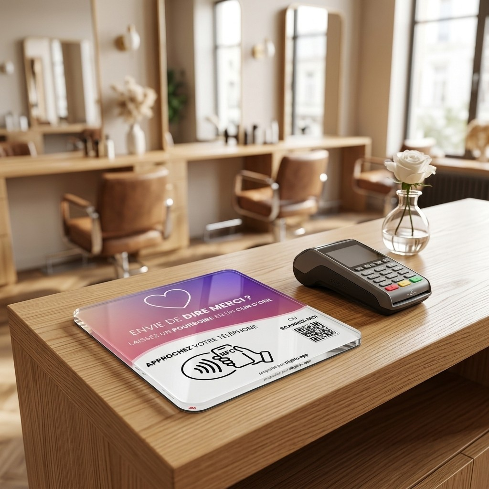

POV : t'as posé une plaque
Digitip
sur ton comptoir
Tes clients voulaient donner.
Ils n'avaient juste
pas de liquide.
Salon Julie · Paris 11e
Bonjour, Julie
Pourboires aujourd'hui
0,00 €
Derniers pourboires
Illustration
Et c'est ton client qui choisit
à qui va le pourboire.
L
Léa
M
Marc
S
Sophie
♥
Toute l'équipe
Digitip
Dès 79 € HT, payée une fois
Livraison offerte · Garantie à vie
digitip.app →